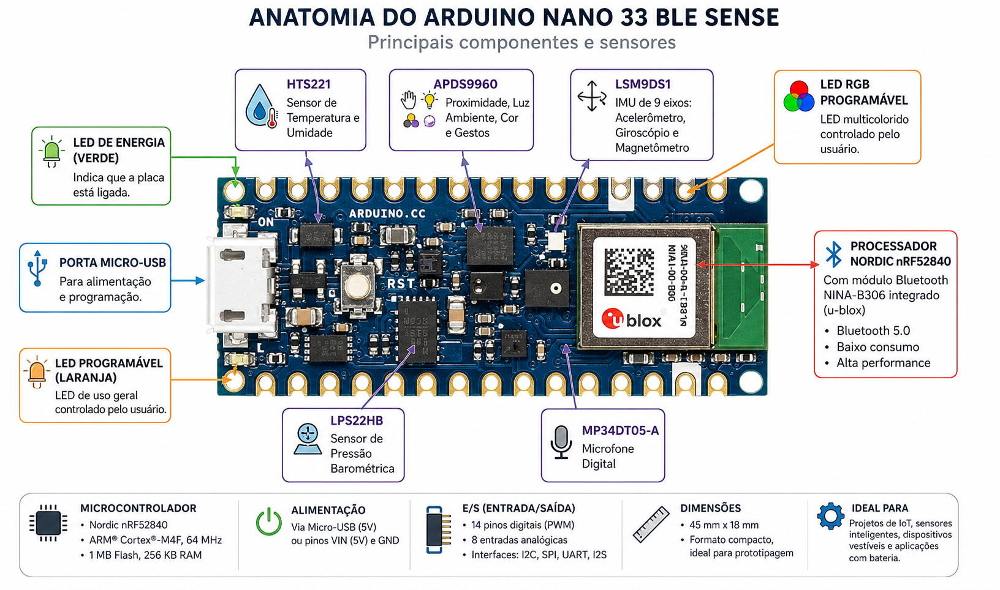

Uma placa compacta com processador ARM Cortex-M4, Bluetooth Low Energy e 7 sensores embutidos — ideal para projetos de IoT, TinyML e robótica.

Principais características de hardware da placa.
nRF52840 (ARM Cortex-M4 FPU)
64 MHz
1 MB Flash · 256 KB RAM
Bluetooth 5.0 (BLE)
3.3V (I/Os tolerantes a 5V)
45 × 18 mm
14 pinos (PWM em 12)
8 entradas · 1 saída DAC
A placa integra 7 sensores diferentes, prontos para uso sem nenhum hardware adicional.
Unidade de medição inercial com 9 graus de liberdade. Detecta movimento, orientação e campos magnéticos.
Sensor capacitivo de temperatura e umidade relativa com alta precisão e baixo consumo.
Sensor piezo-resistivo de pressão absoluta. Pode ser usado para medir altitude.
Sensor ótico multifuncional com detecção de gestos direccionais, cor RGB, luz ambiente e proximidade.
Microfone MEMS omnidirecional com interface PDM. Ideal para reconhecimento de voz e detecção de som.
Referência rápida dos métodos principais de cada sensor.
| Sensor | Biblioteca | Métodos principais |
|---|---|---|
| Acelerômetro | Arduino_LSM9DS1 |
IMU.accelerationAvailable() · IMU.readAcceleration(x,y,z) |
| Giroscópio | Arduino_LSM9DS1 |
IMU.gyroscopeAvailable() · IMU.readGyroscope(x,y,z) |
| Magnetômetro | Arduino_LSM9DS1 |
IMU.magneticFieldAvailable() · IMU.readMagneticField(x,y,z) |
| Temperatura / Umidade | Arduino_HTS221 |
HTS.readTemperature() · HTS.readHumidity() |
| Pressão | Arduino_LPS22HB |
BARO.readPressure() |
| Proximidade | Arduino_APDS9960 |
APDS.proximityAvailable() · APDS.readProximity() |
| Cor / Luz | Arduino_APDS9960 |
APDS.colorAvailable() · APDS.readColor(r,g,b,a) |
| Gesto | Arduino_APDS9960 |
APDS.gestureAvailable() · APDS.readGesture() |
| Microfone | PDM |
PDM.begin(1, 16000) · PDM.onReceive(callback) · PDM.read(buf, len) |
Leitura simultânea de todos os sensores com controle de tempo para o HTS221.
// Instale via Library Manager: Arduino_LSM9DS1, Arduino_HTS221, // Arduino_LPS22HB, Arduino_APDS9960 #include <Arduino_LSM9DS1.h> #include <Arduino_HTS221.h> #include <Arduino_LPS22HB.h> #include <Arduino_APDS9960.h> void setup() { Serial.begin(9600); while (!Serial); IMU.begin(); HTS.begin(); BARO.begin(); APDS.begin(); } void loop() { // Acelerômetro if (IMU.accelerationAvailable()) { float x, y, z; IMU.readAcceleration(x, y, z); Serial.printf("Accel: %.2f, %.2f, %.2f g\n", x, y, z); } // Temperatura e umidade (1 Hz — controla com millis) static unsigned long lastHTS = 0; if (millis() - lastHTS >= 1000) { lastHTS = millis(); Serial.printf("Temp: %.1f C | Umidade: %.1f%%\n", HTS.readTemperature(), HTS.readHumidity()); } // Pressão Serial.printf("Pressao: %.2f kPa\n", BARO.readPressure()); // Proximidade if (APDS.proximityAvailable()) Serial.printf("Prox: %d\n", APDS.readProximity()); // Gesto if (APDS.gestureAvailable()) { int g = APDS.readGesture(); if (g == GESTURE_UP) Serial.println("Gesto: CIMA"); if (g == GESTURE_DOWN) Serial.println("Gesto: BAIXO"); if (g == GESTURE_LEFT) Serial.println("Gesto: ESQUERDA"); if (g == GESTURE_RIGHT) Serial.println("Gesto: DIREITA"); } delay(200); }
Aplicações práticas que exploram os sensores da placa.
Reconhecimento de gestos e palavras-chave com TensorFlow Lite diretamente na placa.
Temperatura, umidade e pressão enviados via BLE para um dashboard.
Controlar dispositivos com movimentos de mão usando o APDS-9960.
Classificação de sons ambientes ou detecção de nível de ruído com o microfone.
Combinado com o módulo OV7675, captura de imagens para inferência de ML.
Cálculo de orientação e detecção de quedas com o IMU de 9 DOF.